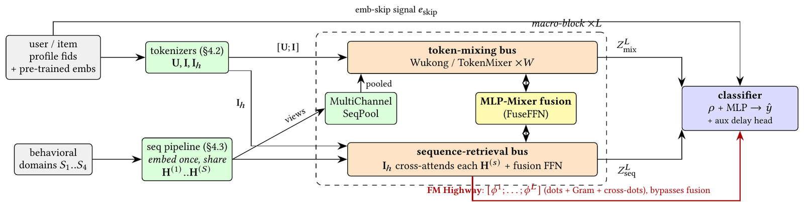
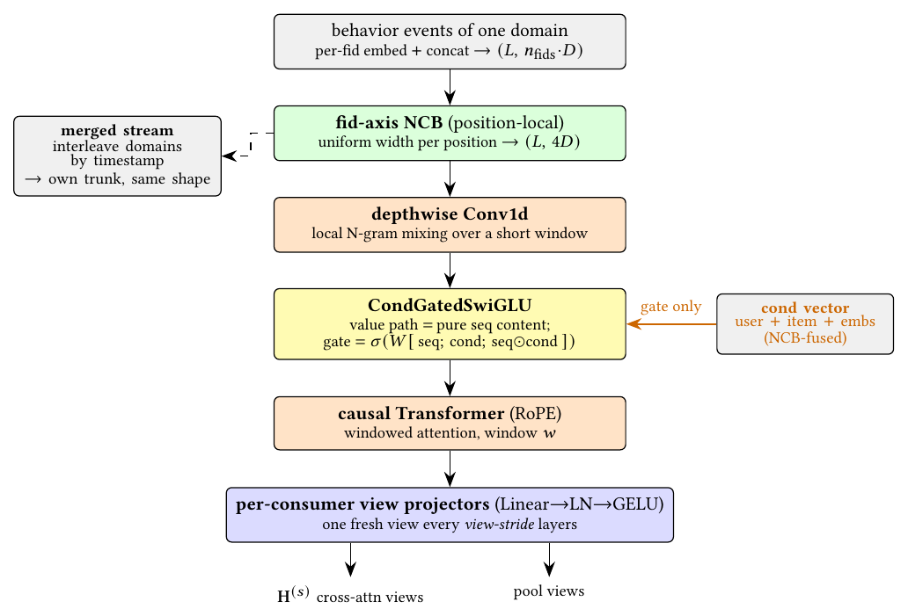
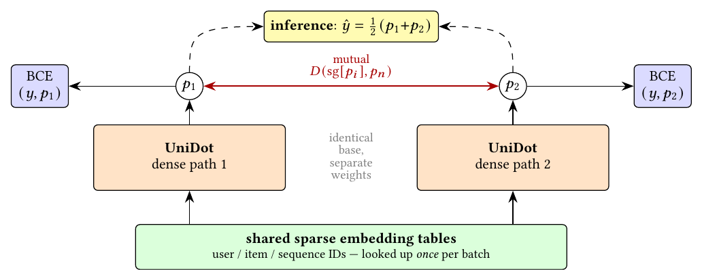

目录 · 9 节
1它到底在解决什么问题？2先看全景3序列怎么编码4FM Highway：让点积直接到达分类器5两条路径互相蒸馏6结果：每一步加了多少7我认为它的局限8一个排序模型团队可以怎么试9结论与评价做排序模型、正在纠结“特征交叉塔”和“序列塔”怎么合并的团队值得读，尤其是其中两个便宜的部件。UniDot 是 Meta 几位作者参加 TAAC（腾讯广告算法大赛）×KDD Cup 2026 腾讯广告转化预测比赛的方案，最终 AUC 0.83217，排第 2，和第 1 名只差 0.00037。它的核心想法一句话：FM（Factorization Machine）里的 embedding 内积和 attention 里的 query·key 是同一种运算，所以可以把用户、物品字段和行为序列都变成同一空间的 token，用两条并行通路一起处理；同时把每一层算出来的点积原样拼起来，绕过后面的融合层直接交给分类器，作者称这条旁路为 FM Highway（作者起的名字，指专门输送点积信号的旁路）。从消融看，这条旁路是贡献最大的单个部件；“两条路径互相蒸馏、上线只用一条”的训练方式也很实用。要注意的是，所有证据都来自一份比赛数据的离线 AUC，很多部件的提升只有零点零几个百分点。
它到底在解决什么问题？
工业排序模型一般由两类结构拼成。一类处理用户画像、物品属性这些多字段特征，用 FM、DCN、Wukong（Meta 提出的一种堆叠式特征交叉结构）等学字段之间的交叉；另一类处理用户的历史行为序列，用 DIN、Transformer 找出和当前候选相关的历史。常见做法是两个塔各算各的，最后把输出向量拼起来。问题在于，画像字段和行为序列直到最后一层才见面。
比赛任务是点击后的转化预测：给定用户、候选广告和用户在 4 个行为域里的历史，预测会不会转化。数据来自真实的腾讯广告日志，训练集 3500 万条，测试集 1200 万条，正样本约占 12%，所有特征都是匿名整数 ID 或定长浮点向量。测试集在训练数据之后的时间段，大部分用户和广告的组合在训练里没出现过。这正是 FM 类方法擅长的情形：用户向量和物品向量各自学好，没见过的组合也能靠内积给出分数。
下面是一个示意，说明为什么两类信号要早点见面：
| 输入（示意） | 只看特征交叉 | 只看行为序列 | 两者一起看 |
|---|---|---|---|
| 用户画像：25 岁，常买运动用品 | 喜欢运动类 | — | — |
| 最近行为：搜过跑鞋、看过两款手表 | — | 最近在看手表 | — |
| 候选广告：一款运动手表 | 类目匹配，中等分 | 和最近行为匹配，中等分 | 画像和近期兴趣同时指向它，分数应明显更高 |
UniDot 想做的就是让“画像 × 候选”和“历史 × 候选”这两种匹配在每一层都互相看得到，并且不让这些匹配信号在深层网络里被冲淡。
先看全景

整个模型可以按数据流分成四段：
| 阶段 | 做什么 | 提交版本的配置 |
|---|---|---|
| 字段变 token | 用户字段压成 22 个 token，物品字段压成两套：12 个给交叉通路，24 个给检索通路 | d_model=128 |
| 序列编码 | 4 个行为域加一条按时间合并的跨域序列，共 5 条，每条只编码一次 | 最近 256 到 512 个行为 |
| 宏模块 × 6 | 两条通路并行，每层末尾交换一次信息，同时产出这一层的点积 | 6 层，每层 2 个交叉子块 |
| 分类器 | 压缩后的最终状态，加上 6 层点积的拼接，过 2 层 MLP | 外加一个预测转化延迟的辅助头 |
字段压缩用的是 NCB（作者起的名字，指在 token 维度上做的两层 MLP）：所有字段先各自查 embedding，再由这个小网络学出“哪些字段合成一个 token”，而不是固定地求平均。少数无序的高价值 ID 列表（例如用户交互过的一串 ID）改用 FAFE（作者起的名字，即按候选加权的字段 embedding）：以当前候选为 query 做一次 DIN 式的 attention 池化，同一个字段面对不同候选会得到不同的 token。
序列怎么编码

这条流水线有四步，每一步对应行为序列里的一种结构。第一步把多个域按时间戳交织成一条合并序列，让模型直接看到不同域的行为谁先谁后。第二步是卷积核宽 21 的 depthwise Conv1d，用很低的成本捕捉相邻事件的局部模式，例如短时间内的连续点击。第三步是条件门控 SwiGLU，下文单独解释。第四步是 1 层、4 个头、窗口 128 的因果 Transformer，加 RoPE 位置编码，负责更长距离的依赖。
条件门控 SwiGLU 是最值得借鉴的设计。普通的 DIN 用候选和每个历史行为算相关度，再加权求和。UniDot 把候选信息只放进门里：
其中 是第 t 个历史行为， 是由用户、物品等 token 融合成的条件向量。举个例子，历史是“手机壳、跑鞋、充电器”，候选是手机支架。门会给手机壳和充电器开得大、给跑鞋开得小，但三个位置输出的内容仍然只来自各自的行为本身，候选只决定每个位置被放大还是压低。和 DIN 直接加权求和相比，这一步之后序列长度不变，后面的 Transformer 还能在保留顺序的序列上继续建模。
FM Highway：让点积直接到达分类器
每个宏模块里，检索通路的物品 token 会对 5 条序列分别做 cross-attention。这一步本身就要算候选和每个历史位置的点积。作者把三类点积收集起来，作为这一层的 FM Highway 信号。第一类是物品和每个行为域的逐位置相似度。第二类是 Gram 矩阵：每个物品 token 对 5 条序列各检索出一个结果向量，把这些结果在 token 维度上排在一起，用一层线性变换压成一组汇总 token，再算每个物品 token 和每个汇总 token 的内积。第三类是交叉通路里的用户 token 和检索通路里的物品 token 之间的内积。
用一个手算的例子说明它为什么有用。设某一层的用户 token 是 (1, 0, 2)，物品 token 是 (0.5, 1, 1)，二者内积是 0.5+0+2=2.5，这个数直接表达了“这个用户和这个物品有多匹配”。如果只走主干，它会被后面的 MLP、残差和融合层不断变换，到分类器时已经和其他维度混在一起。FM Highway 则把 6 层各自的这类数字拼接成一个向量，原样送进分类器。注意是拼接而不是相加，所以每一层的匹配信号都保留下来。作者称这部分代价可以忽略，因为其中大部分点积在 attention 里本来就要算。
交叉通路每层有 2 个子块，默认用 Wukong 的做法：一支在 token 之间做一次线性混合，另一支先算所有 token 两两之间的内积，再把这些内积投影回 token，两支结果相加后加上残差。交叉通路还会从序列那边拿信息：每条序列经过一个多通道池化，C 个通道各自给每个历史位置打一个 0 到 1 的权重：把这个位置的表示和交叉通路当前状态的摘要拼起来，过一个小 MLP 再取 sigmoid，所以不同位置的内容不同，权重也不同；加权求和后得到 C 个序列 token，归一化后并入交叉通路。各通道独立打分，不像 softmax 那样互相争权重，所以能分别抓住不同类型的历史。
两条通路之间的交换由 FuseFFN（作者起的名字，即每层末尾的 MLP-Mixer 式融合模块）完成。它把两条通路的 token 和池化出的序列 token 拼在一起做一次 token 混合，再通过初始化为零的投影把增量写回两条通路，所以训练开始时融合是恒等映射，之后才逐渐起作用。
两条路径互相蒸馏

训练时有两条完全相同结构的稠密通路，共享 embedding 表。每条路径的损失是自己的 BCE（二分类交叉熵），加上 λ 乘以“自己和另一条路径预测之差的平方”，另一条路径的预测不回传梯度。λ=20 看起来很大，手算一下就明白：若样本标签为 0，路径 1 预测 0.30、路径 2 预测 0.20，路径 1 的 BCE 是 −ln(0.7)≈0.36，互学项是 20×(0.30−0.20)²=0.2，两者量级相当。因为两条路径的预测通常只差零点零几，权重小了这一项几乎不起作用。互学项在第一个 epoch 结束后才打开。
作者的解释是两条路径会收敛到更平坦的极小值，泛化更好，而这次比赛的测试集正好是训练之后的时间段。另外两个训练细节也和这种“预测下一段时间”的设定有关：从第二个 epoch 起，每个 epoch 开始时把 embedding 表全部重新初始化，稠密参数保留；对稠密参数维护衰减系数 0.999 的 EMA，提交时使用 EMA 权重。辅助头用 MSE（均方误差）回归 ， 是到用户下一次行为的时间间隔。凡是有下一次行为的样本都能提供这个信号，约为正样本数的 8 倍，权重 λ=0.01。
结果：每一步加了多少
表中“增量”一列是 AUC 的绝对变化乘以 100，例如 +1.102 表示 AUC 从 0.81398 升到 0.82500。下面挑出主要步骤：
| 改动 | 测试 AUC | 增量 |
|---|---|---|
| 比赛官方基线 | 0.81398 | — |
| 换成 UniDot 主结构 | 0.82500 | +1.102 |
| 物品 ID 哈希 embedding、调 token 数和 batch | 0.82704 | 三步合计 +0.204 |
| 更多 FM Highway 点积、Conv1d、延迟辅助损失、FAFE、调学习率 | 0.82894 | 五步合计 +0.19 |
| EMA 权重 | 0.82993 | +0.099 |
| 宽度从 64 加到 128 | 0.83043 | +0.050 |
| 改为 d=64 的双路径互学 | 0.83128 | +0.085 |
| 双路径加到 d=128，再用全量数据重训 | 0.83217 | 合计 +0.089 |
这说明主结构本身贡献了总提升的六成，其余都是小步累积。架构以外的单步里，比较大的是 EMA（+0.099）、调 batch（+0.095）和延迟辅助损失（+0.075）；Conv1d 和更多点积只有 +0.014 和 +0.018。
下面是小规模消融（单路径，d=64，400 万训练样本，随机留出 100 万评估），完整模型 AUC 0.83657：
| 去掉的部件 | AUC | 变化 |
|---|---|---|
| 全部 FM Highway | 0.83530 | −0.127 |
| 只去掉跨通路的用户–物品点积 | 0.83570 | −0.087 |
| token-mixing 通路（换成恒等） | 0.83590 | −0.067 |
| 序列 cross-attention | 0.83604 | −0.053 |
| 合并跨域序列 | 0.83619 | −0.038 |
| FuseFFN | 0.83679 | +0.022，但 LogLoss 变差 |
这说明点积旁路确实是最关键的部件，单是跨通路的那一组就占了它的大半；序列 cross-attention 去掉后只降 0.053，作者认为多通道池化已经捕获了大部分同类信号。FuseFFN 去掉反而 AUC 略升，作者坦言当前这个静态融合是薄弱环节。
规模实验有一个实用结论：d=64 的双路径 AUC 是 0.83128，高于 d=128 单路径的 0.83043，而它的稠密参数反而更少（3760 万对 6030 万），每样本计算量也更低，所以多加一条路径比单纯加宽更划算。把 embedding 宽度翻倍则没有收益，说明瓶颈不在 embedding 表。
数据量方面，同一个小模型的训练样本从 400 万加到 3200 万，留出 AUC 从 0.83657 升到 0.84396，大约每翻一倍 +0.0025，这意味着模型在 3200 万样本时还没有饱和。上线成本上，双路径在 1200 万测试样本上推理加评估约 14,500 秒，单路径约一半；因为只用单路径的 AUC 仍有 0.83184，在排行榜上照样排第 2，所以单路径部署是很划算的折中。
我认为它的局限
第一，证据全部来自一份匿名比赛数据的离线 AUC。作者把真实生产部署列为后续工作，所以这些结构在在线指标、延迟预算和持续训练下表现如何，读者需要自己验证。每个 epoch 重置 embedding 这种做法在比赛的多 epoch 训练里成立，换到按天增量训练的系统就不能直接照搬。
第二，大部分部件的收益很小，而且测量方式容易放大噪声。增量表是逐行累加的单个数字，+0.014、+0.018 这样的差距很可能落在重复运行的波动范围之内。消融用的是随机留出集，完整模型在那里的 AUC 是 0.837，比按时间切分的测试集高出不少，说明两者难度不同，在随机留出集上排出的部件顺序未必能搬到时间切分上。表 4 列的也是单个数值，不带误差范围。
第三，部件多、耦合紧，复现成本高。总参数约 21 亿，主要是 embedding；训练细节也多：embedding 用 Adagrad，稠密矩阵用 Muon（一种先把梯度更新正交化再应用的新优化器）；每次重置 embedding 后，稠密参数的学习率要重新 warmup，EMA 也在这段时间里重置为当前权重。作者自己也说这些细节对复现数字很重要。作者也试过把交叉通路的子块从 Wukong 换成另外两种近期的 token 混合结构（TokenMixer 和 UniMixer），结果都不如 Wukong，但作者认为它们可能需要更多数据才能收敛，只把这看作参考。
一个排序模型团队可以怎么试
- 先加 FM Highway。在现有模型里找出已经算好的点积，例如 DIN 的候选–历史相关度、用户塔和物品塔的内积，把每层的这些数拼接后直接接到分类器输入。几乎没有额外计算，用按时间切分的评估集看 AUC 和 LogLoss。
- 再试共享 embedding 的双路径互学。两条稠密通路，MSE 互学项权重从 20 开始，第 2 个 epoch 再打开。上线时只部署一条路径，和一个单独训练、只有一条通路的模型比较，这是成本最低的收益来源。
- 如果序列模块是 DIN，可以把候选信息改成只进门控的 SwiGLU，后面再接一层短窗口 Transformer，和原来的加权求和对比。
- 数据里有下一次行为的时间戳，就加一个预测 的辅助头，权重从 0.01 起。
- 每个改动至少跑 3 个随机种子，差距小于种子间波动的就不要合入。
结论与评价
最关键的启发是：特征交叉和序列检索算的都是点积，与其让这些点积在深层网络里被稀释，不如把它们原样送到分类器。
| 维度 | 评价 |
|---|---|
| 问题重要性 | 高。特征交叉和序列建模的统一是排序模型的主流方向 |
| 方法创新性 | 中。双通路和 MLP-Mixer 融合有前作，FM Highway 和只进门控的条件 SwiGLU 是较新的组合 |
| 实验证据 | 中低。比赛名次真实，但只有一份数据，部件收益小且多为单次数字 |
| 工程成本 | 整套高；FM Highway 和双路径互学单独拿出来成本低 |
| 是否值得尝试 | 值得挑部件试，不建议整套照搬 |
| 适用场景 | 有多域行为序列、正样本稀疏、测试期在训练期之后的转化或点击预测 |
读完这篇，你觉得
夜读鸮记下了，谢谢你的反馈。
点一下即可，无需登录；再点一次撤回。只统计匿名次数，不记录你是谁。
讨论
欢迎补充实验细节、复现经验或不同看法。需 GitHub 登录。
正在加载讨论…